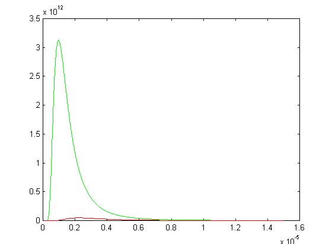

IR-optronik

Det finns tre vanliga (och ett antal ovanliga som vi inte berör i detta kapitel) sätt för en yta att lämna ifrån sig ljus.
Genom spekulär reflektion, dvs att ytan reflekterar ljus enligt lagen i=r. Detta innebär att alla bildinformation som finns i det infallande ljuset bevaras, och det man ser när man tittar på ytan är inte den egentliga ytan utan det som speglas i den. Spegelreflektion kan innehålla kraftigt våglängdsberoende (Jämför guld och silver-speglar exvis) men är ofta tämligen våglängdneutrala. Om detta handlar inte det här kapitlet.
Nästa variant är den som står för 90% av allt vi ser runt oss, diffus reflektion. Det innebär att det inkommande ljuset sprids åt alla håll. En ideal sådan yta brukar kallas för en Lambertspridare och karaktäriseras av att ytan ser lika ljus ut från alla betraktningsriktningar. Tidningspapper, tegel och sot är bra exempel på sådana ytor. Den andel av inkommande ljus som sprids på detta sätt brukar beskrivas med hjälp av absorptionskoefficienten, a som anger absorberad andel. 1-a anger alltså spridd andel. Vi brukar dela in ytor i tre klasser med utgångspunkt från våglängdsberoendet hos a.
Svarta ytor är sådana där all strålning absorberas, dvs a=1 för alla våglängder. Sådana ytor finns inte egentligen (då skulle man i bokstavlig mening inte se dem!!), men många ytor är nästa svarta. Ofta är det också så att man bara är intresserad av strålning i ett visst våglängdsintervall (t.ex. därför att man har en kamera eller ett par ögon som bara är känsliga där) och då brukar man (lite slarvigt men i alla fall) säga att ytan är svart i det intervallet.
Gråa ytor är sådana där a<1, men inte våglängdsberoende. Sådana finns inte heller, men nästan. En matterad aluminiumyta eller fin havssand är bra exempel
Den sista kategorin, dit alla ytor egentligen mer eller mindre hör är den färgade ytan där absorptionskoefficienten är mer eller mindre kraftigt våglängsberoende. Dessa ser för ögat färgade ut om väglängdberoendet ligger i det synliga området, men om a är relativt konstant i det synliga men varierar kraftigt för andra våglängder. Ett bra exempel på detta är (ren) snö, som ju har mycket lågt a i synligt spektrum, men blir nästan svart för våglängder över 3�m.
Den sista varianten av ljusutsändning från en yta (glömt bort att det var det vi höll på att räkna upp kanske?) är så kallad egenstrålning. Den uppkommer därför att den energi som finns i materialet (genom värme, belysning eller annat) leder till att elektroner flyttar sig mellan olika energinivåer i atomerna. När de gör det absorberas eller emitteras (sänds ut) ljus. (I nivå 2
finns en förklaring av de olika mekanismerna.) De våglängder som sänds ut på detta sätt är alltså samma som materialet är bra på att absorbera!!!!Egenstrålningen för svarta kroppar följer
Plancks strålningslag som anger utstrålad effekt per våglängdsintervall. Plottar man den för ett antal våglängder får man kurvor som ser ut som nedan:
Vi plottar först en kurva för temperaturen 300K, dvs runt rumstemperatur. Vi ser att i det synliga spektrum är effekten nära noll, dvs en rumstempererad människa syns inte med blotta ögonen i mörkret. Runt 10-5m (dvs 10�m) har vi emellertid ett max. Rumstempererade kroppar sänder alltså ut mycket strålning i detta område.
Därefter plottar vi för temperaturerna
1300K (rödglödgat järn) och 3000K (glödtråden i en vanlig glödlampa)
Vi ser att skalan på y-axeln är helt annorlunda. Vi har nu fått mycket mer strålning, och den ligger centrerad runt kortare våglängder. Glödtråden har sitt max runt 1�m ,t.ex.
Om vi tittar på hela utstrålningen, dvs inte uppdelat på våglängder kommer den
att lyda Stephan-Bolzmanns lag:  där a är
absorptionskoefficient,
där a är
absorptionskoefficient,
Detta innebär att om man använder en IR-kamera för att leta efter föremål som är varmare än sin bakgrund, kan detta maskeras genom att det varmare föremålet har lägre a!!
Ex. Vi har en bakgrund som är 10�C=283K och a=0.85. Förgrunden är 30�C=303K (ung. ansiktstemp utomhus vid 283K). Vilket a ska du huden ner till för att inte synas som varmare i en värmekamera?
 �inte så märkvärdigt!
�inte så märkvärdigt!
Hur registrerar vi då denna typ av strålning?
 För det första kan man inte använda samma
material till optiken som för NIR eller för synligt ljus eftersom glas blir svart när
våglängden går över 2.5�m (vilket ju inte är så bra). De optiska
material som kan användas är
För det första kan man inte använda samma
material till optiken som för NIR eller för synligt ljus eftersom glas blir svart när
våglängden går över 2.5�m (vilket ju inte är så bra). De optiska
material som kan användas är
Germanium, som har fördelen av att vara transparant i hela IR-området, och är jämförelsevis billigt, nackdel är mycket högt brytningsindex vilket ger stora reflektionsförluster (
Zinkselenid, som har fördelen av att vara genomskinkigt även för rött synligt ljus vilket gör att man kan användasynligt ljus för att rikta upp optiken. Brytningsindex är också lägre. Nackdelen är att materialet är avsevärt dyrare än germanium och att genomskinligheten i 8-10�m-området är mindre bra
Kadmiumtellurid slutligen är avgjort bäst i de flesta avseenden, nackdelen är att det är skört och dyrt.
 För det andra måste själva detektionen ske
med en detektor som är specifikt känsliug för det våglängdsområdet. Vanliga
TV- eller CCD-kameror kan inte användas utan detektorarrayer av annan typ används. Dessa kan vara
antingen direkt avbildande som en vanlig TV-kamera och är då mycket dyra. Alternativt kan de
bestå av en enda detektor (dvs ingen array) som scannar av synfältet med hjälp av roterande
speglar. (Det hörs!) En tredje variant är en hybrid som har detektorer placerade utefter en linje
som de avbildar (motsvarande en TV-linje). Därfter scannar man i höjdled för att få en
hel bild. Det är denna variant som egentligen bär namnet FLIR (Forward Looking InfraRed). Dock
används numera slarvigt "FLIR" för att beteckna alla avbildande IR-system. Försäljare
som använder ordet bör tillfrågas vilket de menar.
För det andra måste själva detektionen ske
med en detektor som är specifikt känsliug för det våglängdsområdet. Vanliga
TV- eller CCD-kameror kan inte användas utan detektorarrayer av annan typ används. Dessa kan vara
antingen direkt avbildande som en vanlig TV-kamera och är då mycket dyra. Alternativt kan de
bestå av en enda detektor (dvs ingen array) som scannar av synfältet med hjälp av roterande
speglar. (Det hörs!) En tredje variant är en hybrid som har detektorer placerade utefter en linje
som de avbildar (motsvarande en TV-linje). Därfter scannar man i höjdled för att få en
hel bild. Det är denna variant som egentligen bär namnet FLIR (Forward Looking InfraRed). Dock
används numera slarvigt "FLIR" för att beteckna alla avbildande IR-system. Försäljare
som använder ordet bör tillfrågas vilket de menar.
 För det tredje måste "kamerahuset" kylas eller
skärmas så att inte det strålar mot detektorn. Eftersom alla material som inte är
genomskinliga (dvs har a=0) för de våglängder vi vill registrera strålar i just dessa
våglängder, blir det ofta ett ganska trixigt system av värmefickor och kapslingar. Ett annat
alternativ är att kyla, men för att då ha någon reell effekt måste man kyla ner
till åtminstone kolsyre temp eller helst flytande kväve, dvs -189�C
För det tredje måste "kamerahuset" kylas eller
skärmas så att inte det strålar mot detektorn. Eftersom alla material som inte är
genomskinliga (dvs har a=0) för de våglängder vi vill registrera strålar i just dessa
våglängder, blir det ofta ett ganska trixigt system av värmefickor och kapslingar. Ett annat
alternativ är att kyla, men för att då ha någon reell effekt måste man kyla ner
till åtminstone kolsyre temp eller helst flytande kväve, dvs -189�C
Till
innehållsförteckningenTill
nästa sida (ickelinjär optik)